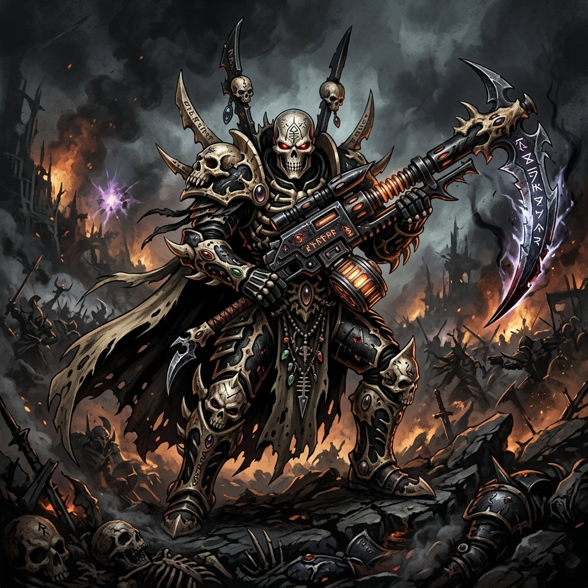
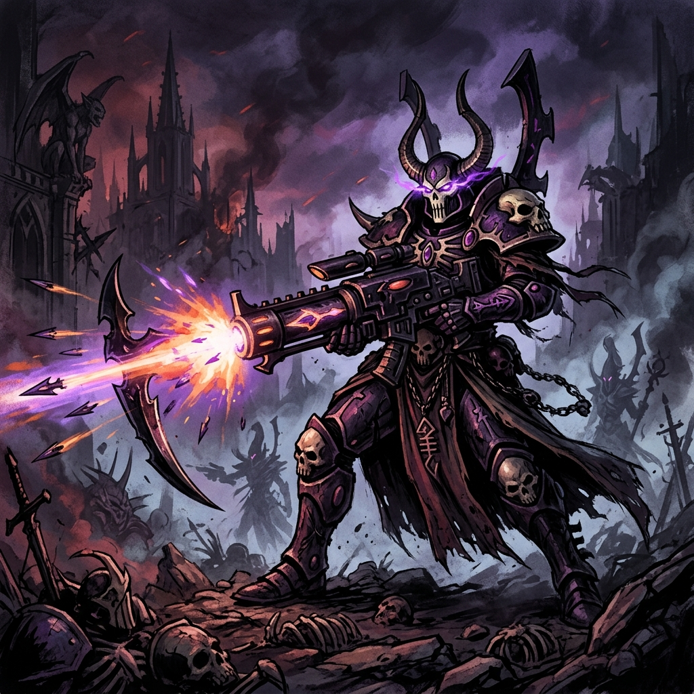
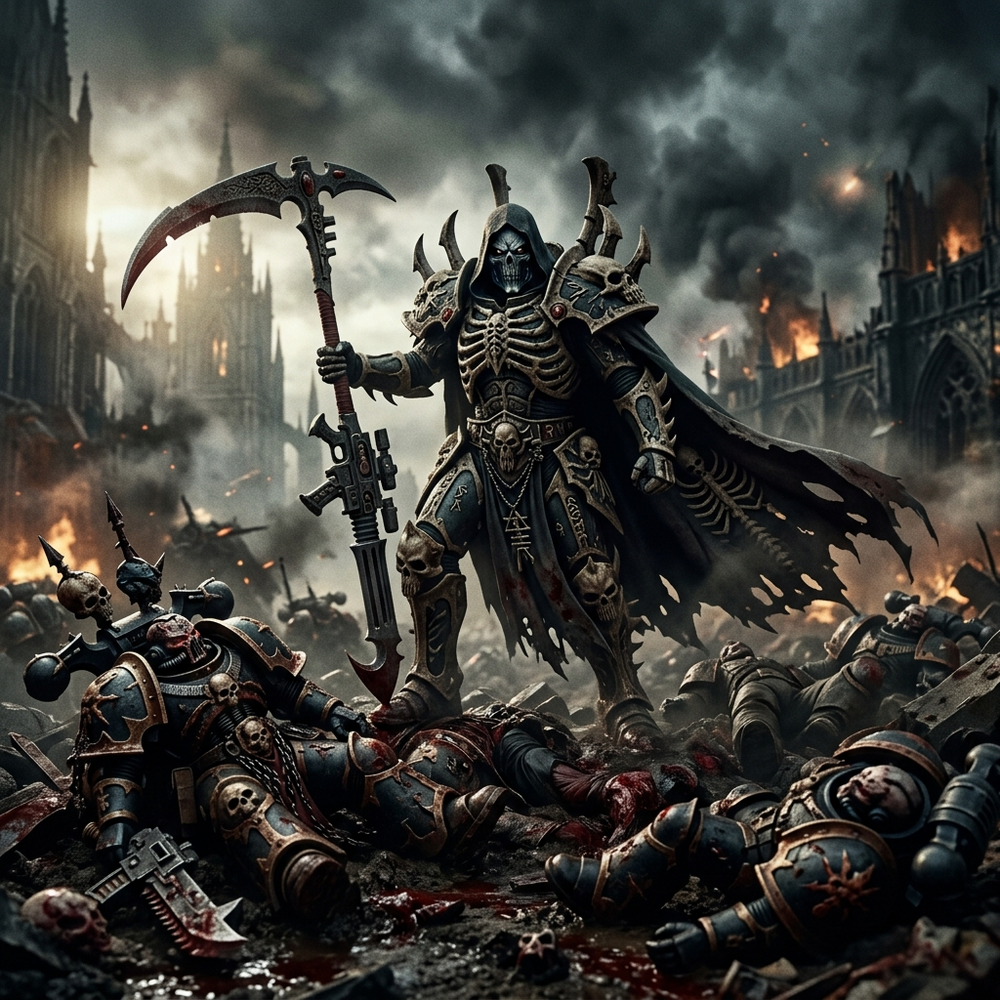

MAUGAN RA
Lorde Fênix dos Dark Reapers • O Ceifador de Almas • Sobrevivente de Altansar

Origem
Maugan Ra, cujo nome significa "O Ceifador de Almas" na língua Aeldari, é um dos primordiais Lordes Fênix (Phoenix Lords) dos Asuryani. Ele é o pai fundador do santuário dos Dark Reapers, a Senda do Guerreiro dedicada a encarnar o aspecto de Khaine como o destruidor implacável e distante.
A lenda de Maugan Ra é forjada em tragédia. Seu Mundo-Ofício, Altansar, foi pego na gravidade da nascente Cicatrix Maledictum e arrastado para as profundezas do Olho do Terror logo após a Queda dos Aeldari. O Mundo-Ofício e todos os seus habitantes foram dados como mortos e consumidos por Slaanesh. Maugan Ra, no entanto, recusou-se a aceitar essa derrota.
Dez mil anos depois, contra todas as probabilidades, Maugan Ra mergulhou sozinho no Olho do Terror, não apenas sobrevivendo à dimensão demoníaca, mas guiando as ruínas de Altansar e os sobreviventes amaldiçoados de volta para o espaço real. Esse ato impossível cimentou sua reputação como uma das entidades mais letais e indomáveis de toda a galáxia.

Credo de Guerra
"A morte é a única promessa que este universo escuro faz, e eu sou o seu executor. Não luto com ódio, apenas com a fria certeza do fim inevitável."
Os guerreiros dos Mundos-Ofício frequentemente lutam com emoção, precisão ou ira ardente, mas Maugan Ra e seus Dark Reapers encarnam o extermínio frio e inabalável. Para ele, a guerra não é uma arte graciosa; é um cálculo macabro de ceifar vidas a longa distância antes que possam tocar suas linhas.
Com sua figura envolta em armadura de osso espectral negro, crânios e mantos rotos, a mera visão do Lorde Fênix causa pânico absoluto nos inimigos. Ele não recua e não corre; ele avança em um passo constante e fúnebre, descarregando uma tempestade contínua de shurikens decapitadoras.
Sua natureza distante fez com que até outros Aeldari o considerem assustador, um presságio ambulante do deus da morte Ynnead, ainda que ele possua uma inquestionável dedicação à sobrevivência de sua raça agonizante.
Capacidade Bélica
- O Maugetar (A Ceifadora): Uma arma colossal exclusiva, hibridizando uma foice de energia gigante (Executioner) e um Shuriken Cannon pesado. Com ela, Maugan Ra pode disparar discos monomoleculares que penetram blindagem pesada a quilômetros de distância, e fatiar hordas inteiras em combate corporal.
- Armadura de Osso Espectral das Trevas: Seu traje, moldado na forma da Morte, interage com a mente do Lorde Fênix e abriga uma rede de sensores para calcular balística em ambientes de zero visibilidade ou através do véu da Disformidade.
- Foco Inabalável: Nenhum poder do Caos, camuflagem tecnológica ou escuridão sobrenatural pode esconder um inimigo da visão do Maugetar. Seu tiro é infalível.
- Imortalidade do Lorde Fênix: Como todos os Phoenix Lords, caso Maugan Ra seja derrubado, sua alma reside em sua armadura. Se outro Exarch Dark Reaper vestir o traje, será consumido e renascerá como Maugan Ra.
Localização Atual: Intervindo em batalhas crônicas no Segmentum Tempestus e patrulhando as proximidades da Fenda ao redor do que restou de Altansar.
Status: Ativo - Ensinando a Senda do Ceifador Negro para novos santuários e caçando Lordes do Caos.
